🐘 恒河王侯
Rajas of the Ganges · 设计：Wolfgang Wentges · HUCH! / Hutter Trade 出版 · 2–4 人 · 官方英文规则书全文翻译（12 页 · AI 辅助机翻）
本页收录《恒河王侯》（Rajas of the Ganges, 2017）的原版官方规则书全部 12 页（底本：HUCH!/Hutter Trade 官方产品下载（hutter-trade.com 产品页 → produkte.hutter-trade.com，2024 von HUCH 版英文规则），huc_23_14210_Rajas%20of%20the%20Ganges_Cards%20and%20Karma_Auflage_A_2024_Rules_ENGLISH_sc.pdf），逐页随图排列，点击任意图片即可放大查看；每页下方默认折叠了该页的 AI 辅助中文机翻对照，需要时可展开。规则内容归 HUCH! / Hutter Trade 及版权方所有，收录仅供个人学习查阅。
整理说明：机翻对照按本站术语口径对齐（牌库/手牌/回合/轮/板块/指示物等），PDF 图文混排页的语序可能与原书视觉顺序略有出入；规则细节请一律以页面上方原书页面为准。
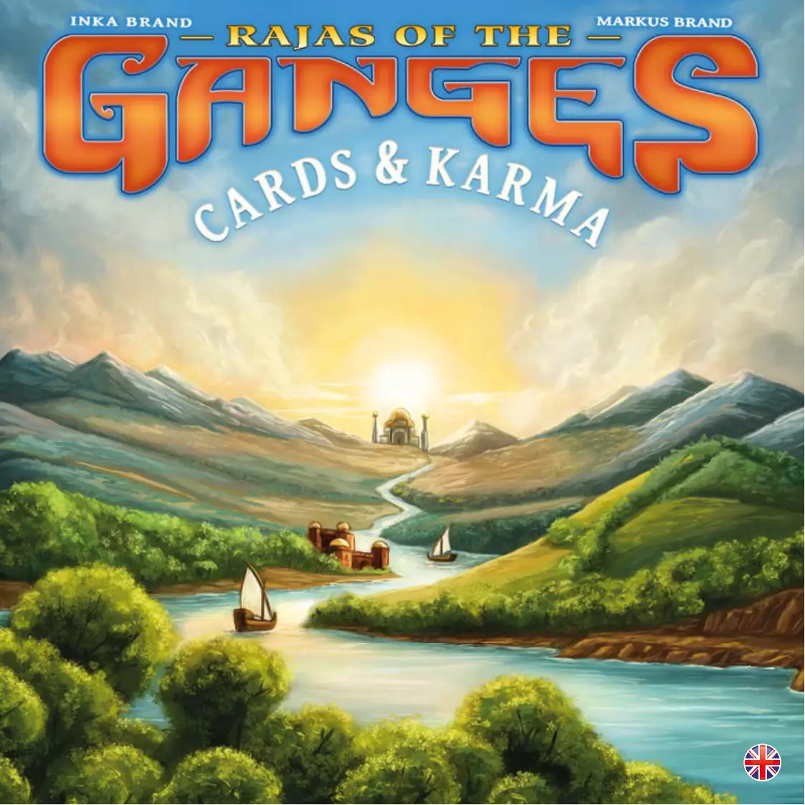
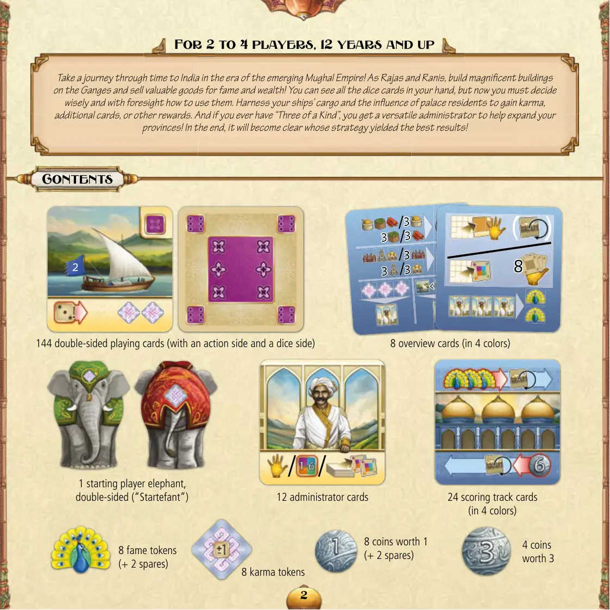
📝 第 2 页 AI 机翻对照（点击展开）
目录
144张双面游戏牌（有行动面和骰子面）
4枚价值3的硬币
8枚价值1的硬币
（+2枚备用）
8业力指示物
8声望指示物
（+2枚备用）
穿越时空，回到莫卧儿帝国崛起时期的印度！作为王公和王后，在恒河上建造宏伟的建筑，出售珍贵的商品以获得声望和财富！你可以看到手中的所有骰子牌，但现在你必须明智且有远见地决定如何使用它们。利用你船队的货物和宫廷居民的影响力来获得业力、额外的卡牌或其他奖励。如果你 ever 有"三张相同"，你会得到一个多才多艺的管理员来帮助你扩展你的省份！最终，将会清楚谁的策略取得了最好的结果！
适合2-4名玩家，12岁及以上
1名起始玩家大象，双面（"Startefant"）
8张概览卡（4种颜色）
24张计分轨道卡
（4种颜色）
12张管理员卡
目录
目录
目录
144张双面游戏牌（有行动面和骰子面）
4枚价值3的硬币
8枚价值1的硬币
（+2枚备用）
8业力指示物
8声望指示物
（+2枚备用）
穿越时空，回到莫卧儿帝国崛起时期的印度！作为王公和王后，在恒河上建造宏伟的建筑，出售珍贵的商品以获得声望和财富！你可以看到手中的所有骰子牌，但现在你必须明智且有远见地决定如何使用它们。利用你船队的货物和宫廷居民的影响力来获得业力、额外的卡牌或其他奖励。如果你 ever 有"三张相同"，你会得到一个多才多艺的管理员来帮助你扩展你的省份！最终，将会清楚谁的策略取得了最好的结果！
适合2-4名玩家，12岁及以上
1名起始玩家大象，双面（"Startefant"）
8张概览卡（4种颜色）
24张计分轨道卡
（4种颜色）
12张管理员卡
8业力
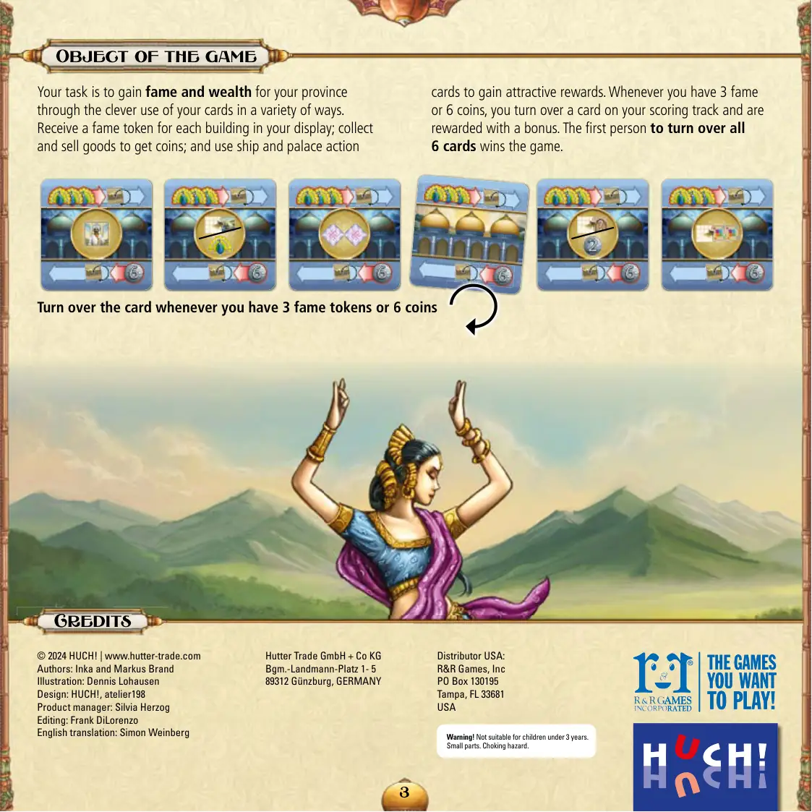
📝 第 3 页 AI 机翻对照（点击展开）
游戏目标
你的任务是通过巧妙地使用你的卡牌，以多种方式为你的省份赢得声望和财富。为你的陈列区中的每座建筑获得一个声望指示物；收集并出售货物以获得硬币；并使用船只和宫殿行动卡牌来获得有吸引力的奖励。每当你有3个声望指示物或6个硬币时，就翻转你记分轨道上的一张卡牌并获得奖励。第一个翻转完所有6张卡牌的人赢得游戏。
致谢
© 2024 HUCH! | www.hutter-trade.com
作者：Inka and Markus Brand
插画：Dennis Lohausen
设计：HUCH!, atelier198
产品经理：Silvia Herzog
编辑：Frank DiLorenzo
英文翻译：Simon Weinberg
警告！不适合3岁以下儿童。
小零件。有窒息危险。
Hutter Trade GmbH + Co KG
Bgm.-Landmann-Platz 1- 5
89312 Günzburg, GERMANY
美国分销商：
R&R Games, Inc
PO Box 130195
Tampa, FL 33681
USA
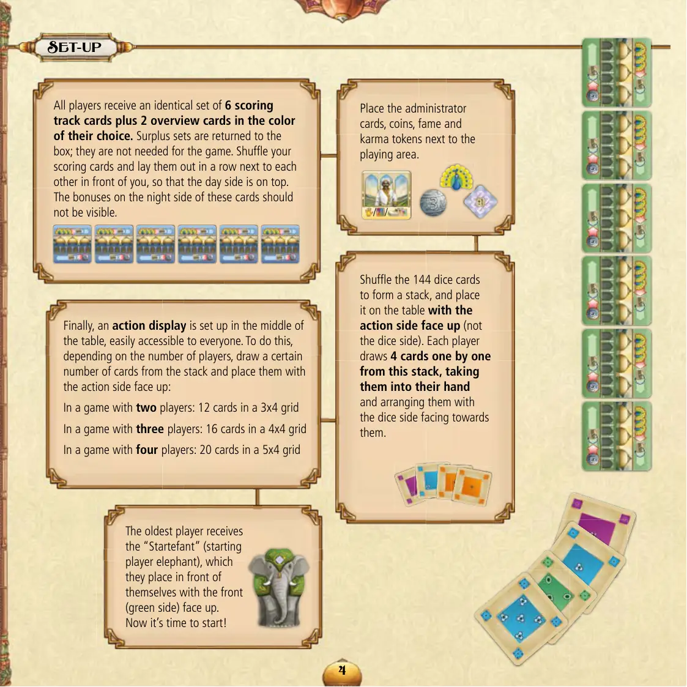
📝 第 4 页 AI 机翻对照（点击展开）
所有玩家获得一套相同的6张计分轨道卡和2张概览卡，颜色由玩家自行选择。多余的套组放回盒中；游戏不需要它们。洗匀你的计分卡，并将它们在你面前排成一行，正面朝上，使白天面朝上。这些卡牌夜晚面的奖励不应可见。
将管理员卡、金币、声望和业力指示物放在游戏区域旁边。
洗匀144张骰子卡，形成一叠，并将其放在桌上，行动面朝上（不是骰子面）。每位玩家从这叠牌中依次抽取4张牌，收入手牌，并将它们骰子面朝向自己排列。
最后，在桌子中央设置一个行动展示区，方便所有人取用。为此，根据玩家数量，从牌堆中抽取一定数量的牌，并将它们行动面朝上放置：
在两人游戏中：12张牌，排成3x4的网格
在三人游戏中：16张牌，排成4x4的网格
在四人游戏中：20张牌，排成5x4的网格
最年长的玩家获得"起始象"(Start efant/starting player elephant)，他们将其放在自己面前，正面（绿色面）朝上。
现在可以开始了！
设置
所有玩家获得一套相同的6张计分轨道卡和2张概览卡，颜色由玩家自行选择。
多余的套组放回盒中；游戏不需要它们。洗匀你的计分卡，并将它们在你面前排成一行，正面朝上，使白天面朝上。
这些卡牌夜晚面的奖励不应可见。
将管理员卡、金币、声望和业力指示物放在游戏区域旁边。
洗匀144张骰子卡，形成一叠，并将其放在桌上，行动面朝上（不是骰子面）。每位玩家从这叠牌中依次抽取4张牌，收入手牌，并将它们骰子面朝向自己排列。
最后，在桌子中央设置一个行动展示区，方便所有人取用。为此，根据玩家数量，从牌堆中抽取一定数量的牌，并将它们行动面朝上放置：
在两人游戏中：12张牌，排成3x4的网格
在三人游戏中：16张牌，排成4x4的网格
在四人游戏中：20张牌，排成5x4的网格
最年长的玩家获得"起始象"(Start efant/starting player elephant)，他们将其放在自己面前，正面（绿色面）朝上。
现在可以开始了！
up
u
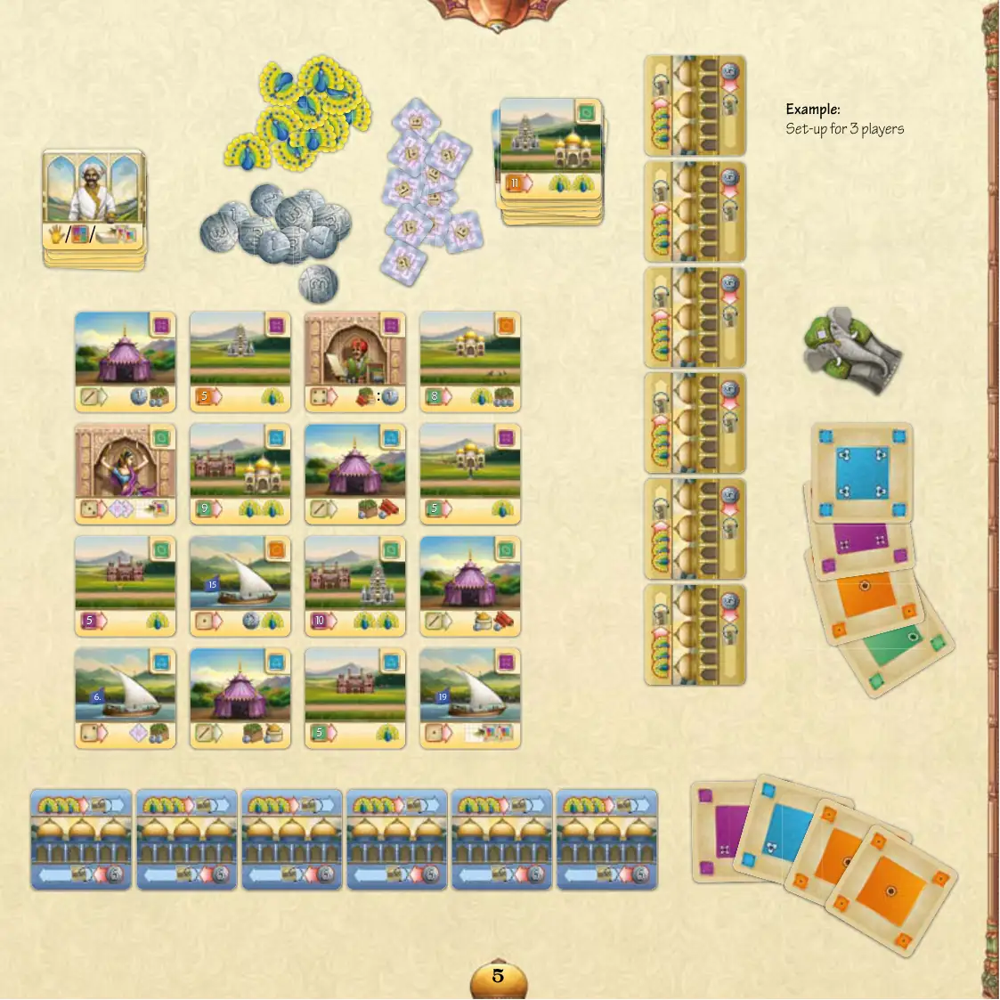
📝 第 5 页 AI 机翻对照（点击展开）
示例：
3名玩家设置
示例：
3名玩家设置
6.
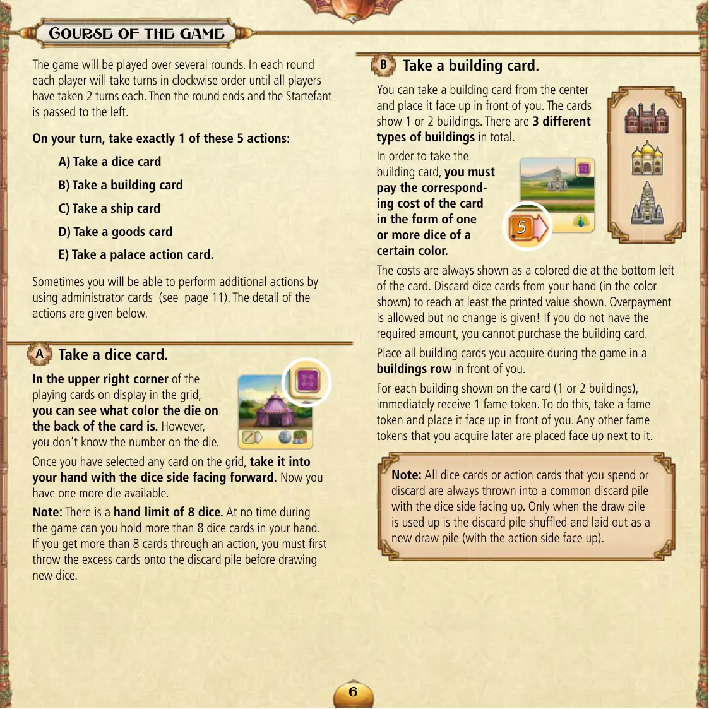
📝 第 6 页 AI 机翻对照（点击展开）
B
A
游戏流程
游戏将进行数轮。在每轮中，玩家们按顺时针顺序轮流行动，直到每位玩家都进行了2个回合。然后轮次结束，起始玩家（Startefant）向左传递。
在你的回合，必须从以下5个行动中恰好选择1个：
A) 拿取一张骰子卡牌
B) 拿取一张建筑卡牌
C) 拿取一张船只卡牌
D) 拿取一张货物卡牌
E) 拿取一张宫殿行动卡牌。
有时，你可以通过使用管理员卡牌（参见第11页）来执行额外行动。各项行动的细节如下所述。
拿取一张骰子卡牌。
在网格中展示的游戏卡牌右上角，你可以看到卡牌背面骰子的颜色。然而，你不知道骰子上的数字。
一旦你选择了网格中的任何卡牌，将其拿入手中，骰子面朝前。现在你有了一个额外的骰子可用。
注意：手牌上限为8张骰子卡牌。游戏期间任何时候你手中都不能持有超过8张骰子卡牌。如果你的行动导致你获得超过8张卡牌，你必须先将多余的牌扔入弃牌堆，然后才能摸取新的骰子。
拿取一张建筑卡牌。
你可以从中央拿取一张建筑卡牌，并将其正面朝上放置在你面前。卡牌上显示1个或2个建筑。总共有3种不同类型的建筑。
为了拿取建筑卡牌，你必须以一个或多个特定颜色的骰子形式支付相应的卡牌费用。
费用始终显示在卡牌左下角，为一个彩色骰子。从你手中弃置（显示颜色的）骰子卡牌，以达到至少所示的印刷数值。允许超额支付但不找零！如果你没有所需金额，则不能购买该建筑卡牌。
将你在游戏过程中获得的所有建筑卡牌在你面前排成一行。
对于卡牌上显示的每个建筑（1个或2个建筑），立即获得1个声望指示物。为此，拿取一个声望指示物并将其正面朝上放置在你面前。之后你获得的任何其他声望指示物都正面朝上放置在其旁边。
注意：你花费或弃置的所有骰子卡牌或行动卡牌总是被扔入一个共同的弃牌堆，骰子面朝上。只有当牌库用尽时，弃牌堆才会被洗牌并重新作为新牌库摆放（行动面朝上）。
B
A
游戏
游戏
流程
流程
游戏将进行数轮。在每轮中，玩家们按顺时针顺序轮流行动，直到每位玩家都进行了2个回合。然后轮次结束，起始玩家（Startefant）向左传递。
在你的回合，必须从以下5个行动中恰好选择1个：
A) 拿取一张骰子卡牌
B) 拿取一张建筑卡牌
C) 拿取一张船只卡牌
D) 拿取一张货物卡牌
E) 拿取一张宫殿行动卡牌。
有时候，你将能够通过使用管理员卡牌（参见第11页）来执行额外的行动。这些行动的细节如下所示。
获取一张骰子卡牌。
在网格中展示的游戏卡牌的右上角，你可以看到卡牌背面骰子的颜色。然而，你不知道骰子上的数字。
一旦你选择了网格中的任何卡牌，将其骰子面朝前拿入你的手牌。现在你有了一个额外的骰子可用。
注意：手牌上限为8张骰子卡牌。在游戏任何时候，你手中持有的骰子卡牌都不能超过8张。如果你通过某个行动获得了超过8张卡牌，你必须先将多余的卡牌扔到弃牌堆，然后才能摸取新的骰子。
获取一张建筑卡牌。
你可以从中央拿取一张建筑卡牌，并将其正面朝上放置在你面前。卡牌上显示1或2个建筑。总共有3种不同类型的建筑。
为了获取建筑卡牌，你必须以一个或多个特定颜色的骰子形式支付相应的卡牌费用。
费用总是显示在卡牌左下角的一个彩色骰子。从你的手牌中弃置骰子卡牌（按所示颜色），以达到至少所示的印刷数值。允许超额支付，但不找零！如果你没有所需的金额，你不能购买建筑卡牌。
将你在游戏中获得的所有建筑卡牌放置在你面前的一排建筑中。
对于卡牌上显示的每个建筑（1或2个建筑），立即获得1个声望指示物。为此，拿取一个声望指示物并将其正面朝上放置在你面前。之后你获得的任何其他声望指示物都正面朝上放置在它旁边。
注意：
所有骰子卡牌或行动卡牌，无论你使用还是弃置，总是被正面朝上扔入一个共同的弃牌堆。只有当摸牌堆用完时，弃牌堆才会被洗牌并作为新的摸牌堆摆放（骰子面朝下，行动面朝上）。
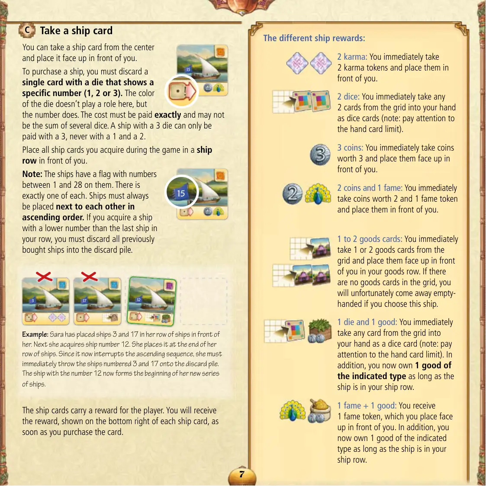
📝 第 7 页 AI 机翻对照（点击展开）
C
获取一张船牌
你可以从中央获取一张船牌，并将其正面朝上放置在你面前。
要购买一艘船，你必须弃掉一张显示特定数字（1、2或3）的骰子牌。骰子的颜色在这里不起作用，但数字起作用。费用必须精确支付，不能是多个骰子的总和。一张3骰子的船只能用3支付，绝不能用1和2支付。
将你在游戏过程中获得的所有船牌放置在你面前的船行中。
注意：船上有一个带有1到28之间数字的旗帜。每个数字恰好有一艘。船必须始终按升序相邻放置。如果你获得了一艘编号小于你船行中最后一艘船的船，你必须将之前购买的所有船弃入弃牌堆。
示例：Sara在她面前的船行中放置了3号和17号船。接下来她获得了12号船。她将其放置在她的船行末尾。由于现在它打断了升序序列，她必须立即将编号为3和17的船弃入弃牌堆。编号为12的船现在构成了她新船行的开始。
船牌为玩家提供奖励。你将在购买船牌时立即获得奖励，奖励显示在每张船牌的右下角。
不同的船奖励：
2业力：你立即获取2个业力指示物，并将它们放置在你面前。
2骰子：你立即从网格中任意获取2张牌作为骰子牌加入手牌（注意：注意手牌上限）。
3金币：你立即获取价值3的金币，并将它们正面朝上放置在你面前。
2金币和1声望：你立即获取价值2的金币和1个声望指示物，并将它们放置在你面前。
1到2张货物牌：你立即从网格中获取1或2张货物牌，并将它们正面朝上放置在你面前的货物行中。如果网格中没有货物牌，如果你选择这艘船，你将不幸空手而归。
1个骰子和1种货物：你立即从网格中任意获取一张牌作为骰子牌加入手牌（注意：注意手牌上限）。此外，只要这艘船在你的船行中，你就拥有1张所示类型的货物。
1声望+1种货物：你获得1个声望指示物，将其正面朝上放置在你面前。此外，只要这艘船在你的船行中，你就拥有1张所示类型的货物。
C
获取一张船牌
你可以从中央获取一张船牌，并将其正面朝上放置在你面前。
要购买一艘船，你必须弃掉一张显示特定数字（1、2或3）的骰子牌。骰子的颜色在这里不起作用，但数字起作用。费用必须精确支付，不能是多个骰子的总和。一张3骰子的船只能用3支付，绝不能用1和2支付。
用3支付，而不是用1和2支付。
将你在游戏过程中获得的所有飞船卡牌放置在你面前的飞船行中。
注意：飞船上有一个带有1到28之间数字的旗帜。每个数字恰好有一个。飞船必须始终按升序相邻放置。如果你获得的飞船编号小于你飞船行中最后一艘飞船的编号，你必须将之前购买的飞船全部弃入弃牌堆。
示例：Sara在她面前的飞船行中放置了编号为3和17的飞船。接下来她获得了编号为12的飞船。她将其放置在她飞船行的末尾。由于现在它打断了升序序列，她必须立即将编号为3和17的飞船弃入弃牌堆。编号为12的飞船现在构成了她新飞船系列的开头。
飞船卡牌为玩家提供奖励。你将在购买卡牌时立即获得奖励，奖励显示在每艘飞船卡牌的右下角。
p奖励：
不同的飞船
2业力：你立即获得2个业力指示物，并将它们放置在你面前。
2骰子：你立即从网格中任意抽取2张卡牌作为骰子卡牌加入手牌（注意：注意手牌上限）。
3金币：你立即获得价值3的金币，并将它们正面朝上放置在你面前。
2金币和1声望：你立即获得价值2的金币和1个声望指示物，并将它们放置在你面前。
1到2张货物卡牌：你立即从网格中抽取1或2张货物卡牌，并将它们正面朝上放置在你面前的货物行中。如果网格中没有货物卡牌，不幸的是，如果你选择这艘飞船，你将一无所获。
1个骰子和1种货物：你立即从网格中任意抽取1张卡牌作为骰子卡牌加入手牌（注意：注意手牌上限）。此外，只要这艘飞船在你的飞船行中，你就拥有1张指定类型的货物。
1声望+1种货物：你获得1个声望指示物，并将其正面朝上放置在你面前。此外，只要这艘飞船在你的飞船行中，你就拥有1张指定类型的货物。
X
X
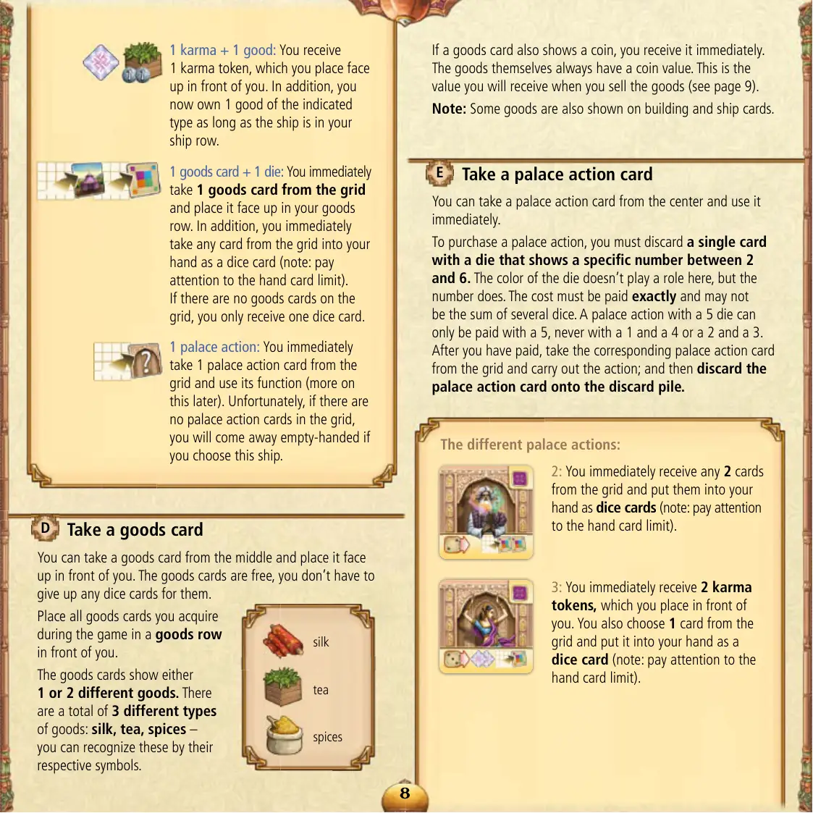
📝 第 8 页 AI 机翻对照（点击展开）
E
D
1 业力 + 1 商品：你获得
1 个业力指示物，你将其正面朝上放置在自己面前。此外，只要这艘船在你的船行中，你就拥有 1 个所示类型的商品。
1 张商品卡 + 1 个骰子：你立即从网格中拿取 1 张商品卡并正面朝上放置在你的商品行中。此外，你立即从网格中任意拿取 1 张卡牌作为骰子卡放入手牌（注意：注意手牌上限）。如果网格中没有商品卡，你只获得一张骰子卡。
1 个宫殿行动：你立即从网格中拿取 1 张宫殿行动卡并使用其功能（更多内容将在后面介绍）。不幸的是，如果网格中没有宫殿行动卡，你选择这艘船将一无所获。
拿取一张商品卡
你可以从中间拿取一张商品卡并正面朝上放置在自己面前。商品卡是免费的，你不必为此放弃任何骰子卡。
将你在游戏过程中获得的所有商品卡放置在自己面前的商品行中。
商品卡上显示的是 1 或 2 种不同的商品。共有 3 种不同类型的商品：丝绸、茶叶、香料——你可以通过各自的符号来识别它们。
如果商品卡上也显示一枚硬币，你立即获得它。商品本身总是有一个硬币价值。这是你在出售商品时将获得的数值（见第 9 页）。
注意：一些商品也显示在建筑卡和船卡上。
拿取一张宫殿行动卡
你可以从中心拿取一张宫殿行动卡并立即使用它。
要购买宫殿行动，你必须弃掉一张显示特定数字（2 到 6 之间）的骰子卡。骰子的颜色在这里不起作用，但数字起作用。费用必须精确支付，不能是多个骰子的总和。一个 5 的宫殿行动只能用 5 支付，绝不能用 1 和 4 或 2 和 3 支付。
支付后，从网格中拿取相应的宫殿行动卡并执行行动；然后将宫殿行动卡弃置到弃牌堆中。
不同的宫殿行动：
2：你立即从网格中任意拿取 2 张卡牌作为骰子卡放入手牌（注意：注意手牌上限）。
3：你立即获得 2 个业力指示物，你将其放置在自己面前。你还要从网格中选择 1 张卡牌作为骰子卡放入手牌（注意：注意手牌上限）。
E
D
1 业力 + 1 商品：你获得
1 个业力指示物，你将其正面朝上放置在自己面前。此外，只要这艘船在你的船行中，你就拥有 1 个所示类型的商品。
1 张商品卡 + 1 个骰子：你立即从网格中拿取 1 张商品卡并正面朝上放置在你的商品行中。此外，你立即从网格中任意拿取 1 张卡牌作为骰子卡放入手牌（注意：注意手牌上限）。如果网格中没有商品卡，你只获得一张骰子卡。
1 个宫殿行动：你立即从网格中拿取 1 张宫殿行动卡并使用其功能（更多内容将在后面介绍）。不幸的是，如果网格中没有宫殿行动卡，你选择这艘船将一无所获。
作为骰子牌（注意：请注意手牌上限）。
如果版图上没有货物牌，你只能获得一张骰子牌。
1个宫殿行动：你立即从版图上拿取1张宫殿行动牌并使用其功能（更多内容将在后面介绍）。不幸的是，如果版图上没有宫殿行动牌，你选择这艘船将一无所获。
拿取货物牌
你可以从中间拿取一张货物牌，并将其正面朝上放在你面前。货物牌是免费的，你不需要为此放弃任何骰子牌。
将你在游戏过程中获得的所有货物牌排成一行放在你面前。
货物牌上显示1或2种不同的货物。共有3种不同类型的货物：丝绸、茶叶、香料——你可以通过各自的符号识别它们。
如果货物牌上也显示有硬币，你立即获得它。货物本身总是有硬币价值。这是你出售货物时将获得的价值（见第9页）。
注意：一些货物也显示在建筑牌和船只牌上。
拿取宫殿行动牌
你可以从中央拿取一张宫殿行动牌并立即使用它。
要购买宫殿行动，你必须弃掉一张显示2到6之间特定数字的骰子牌。骰子的颜色在这里不起作用，但数字起作用。费用必须精确支付，不能是多个骰子的总和。一个5的宫殿行动只能用5支付，绝不能用1和4或2和3支付。
支付后，从版图上拿取相应的宫殿行动牌并执行行动；然后将宫殿行动牌弃置到弃牌堆上。
宫殿行动：
不同的宫殿行动：
2：你立即从版图上获得任意2张牌，并将它们作为骰子牌放入手牌（注意：请注意手牌上限）。
3：你立即获得2个业力指示物，将其放在你面前。你还要从版图上选择1张牌，并将其作为骰子牌放入手牌（注意：请注意手牌上限）。
丝绸
茶叶
香料
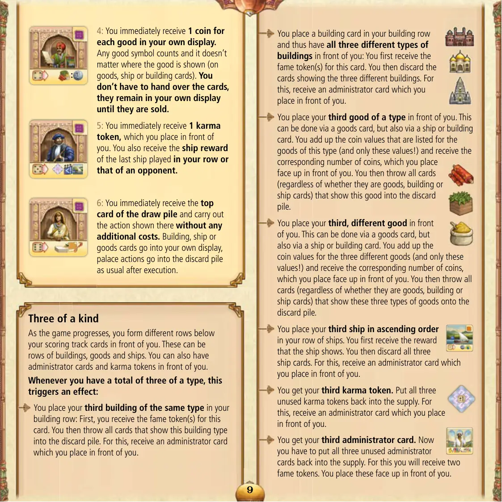
📝 第 9 页 AI 机翻对照（点击展开）
4: 你立即获得1枚硬币，对应你展示区中的每件商品。
任何商品符号都算数，商品展示的位置（商品卡、船只卡或建筑卡上）无关紧要。你不必交出这些卡牌，它们保留在你的展示区中，直到被售出。
5: 你立即获得1个业力指示物，将其放置在你面前。你还会获得你所在行最后打出的船只奖励，或对手的船只奖励。
6: 你立即获得牌库顶部的卡牌，并执行其上显示的行动，无需任何额外费用。建筑卡、船只卡或商品卡进入你的展示区，宫殿行动执行后如常进入弃牌堆。
三张相同
随着游戏进行，你会在自己面前的计分轨道卡下方形成不同的行。这些可以是建筑、商品和船只的行。你也可以在面前拥有管理员卡和业力指示物。
每当你有总计三张同类型卡牌时，会触发一个效果：
你将第三张相同类型的建筑放置在你的建筑行中：首先，你获得这张卡牌的名望指示物。然后将所有显示该建筑类型的卡牌弃入弃牌堆。为此，你获得一张管理员卡，将其放置在你面前。
你将一张建筑卡放置在你的建筑行中，从而在面前拥有所有三种不同类型的建筑：首先，你获得这张卡牌的名望指示物。然后弃掉显示这三种不同建筑的卡牌。为此，你获得一张管理员卡，将其放置在你面前。
你将第三件相同类型的商品放置在面前。这可以通过商品卡完成，也可以通过船只卡或建筑卡完成。你将此类型商品（仅这些价值！）上列出的硬币价值相加，并获得相应数量的硬币，将其正面朝上放置在你面前。然后将所有显示此商品的卡牌（无论商品卡、建筑卡还是船只卡）弃入弃牌堆。
你将第三件不同的商品放置在面前。这可以通过商品卡完成，也可以通过船只卡或建筑卡完成。你将三种不同商品的硬币价值（仅这些价值！）相加，并获得相应数量的硬币，将其正面朝上放置在你面前。然后将所有显示这三种商品类型的卡牌（无论商品卡、建筑卡还是船只卡）弃入弃牌堆。
你将第三艘按顺序递增的船只放置在你的船只行中。首先，你获得该船只显示的奖励。然后弃掉所有三艘船只卡。为此，你获得一张管理员卡，将其放置在你面前。
你获得第三个业力指示物。将所有三个未使用的业力指示物放回供应池。为
4: 你立即获得自己展示区中每件商品1枚金币。
任何商品符号都算，商品展示在哪里（商品卡、船只卡或建筑卡上）并不重要。你不必交出这些卡牌，它们会保留在你的展示区中，直到被售出。
5: 你立即获得1枚业力指示物，并将其正面朝上放在你面前。你还会获得你一行中最后打出的船只奖励，或来自对手的船只奖励。
6: 你立即获得牌库顶部的1张卡牌，并执行其上显示的行动，无需任何额外费用。建筑卡、船只卡或商品卡进入你的展示区，宫殿行动执行后如常进入弃牌堆。
随着游戏进行，你会在面前形成不同的行，这些可以是你的计分行，包含建筑、商品和船只。你也可以在面前有建筑卡行和业力指示物行。
每当你在面前拥有同一类型的三个物品时，这会触发一个效果：
你在你的建筑行中放置第三张同类型的建筑卡。首先，你获得这张建筑卡的声望指示物。然后将所有显示此建筑类型的卡牌扔入弃牌堆。为此，你获得1张管理员卡，将其放在你面前。
你在面前拥有三种不同类型的建筑：你首先获得这张卡的声望指示物。然后弃掉这三种不同的建筑卡。为此，你获得1张管理员卡，将其放在你面前。
你在面前放置第三张同类型的商品。这可以通过商品卡完成，也可以通过船只卡或建筑卡完成。你将此类型商品（仅这些！）上列出的金币价值相加，并获得相应数量的金币，将其正面朝上放在你面前。然后将所有显示此商品的卡牌（无论它们是商品卡、建筑卡还是船只卡）扔入弃牌堆。
你在面前放置第三种不同的商品。这可以通过商品卡完成，也可以通过船只卡或建筑卡完成。你将这三种不同商品（仅这些！）的金币价值相加，并获得相应数量的金币，将其正面朝上放在你面前。然后将所有显示这三种类型商品的卡牌（无论它们是商品卡、建筑卡还是船只卡）扔入弃牌堆。
按升序排列的第三艘船
您首先获得您所在行显示的奖励。然后弃掉所有三张船牌。
为此，您获得一张管理员牌，您将其放置在您面前。
您获得您的第三个业力指示物。将所有三个业力指示物放回供应池。为此，您获得一张管理员牌，您将其放置在您面前。
您获得您的第三个管理员牌。现在您必须将所有三张未使用的管理员牌放回供应池。为此，您将获得两个声望指示物。您将这些面朝上放置在您面前。
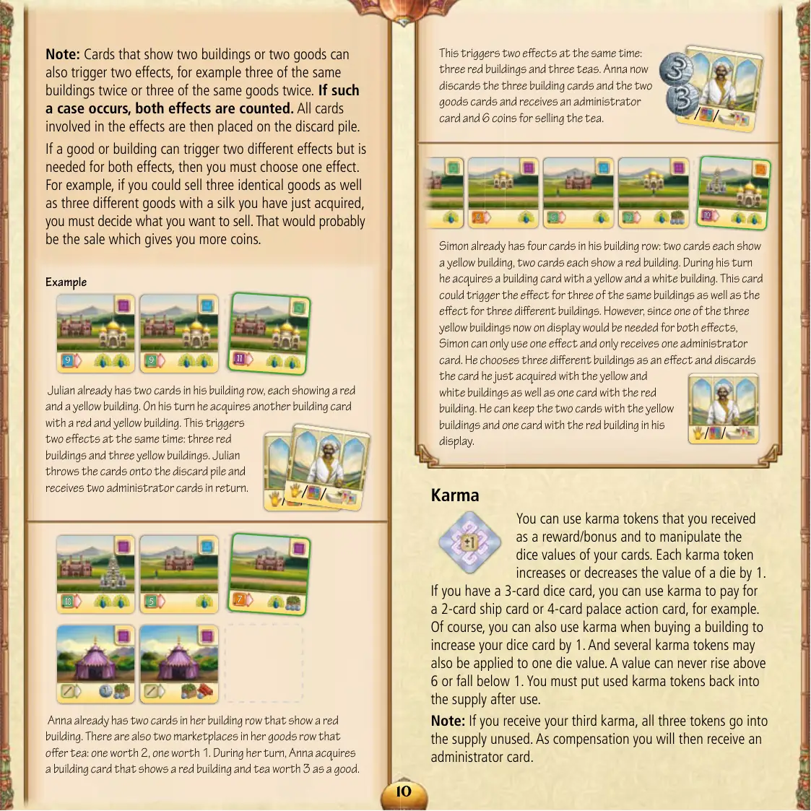
📝 第 10 页 AI 机翻对照（点击展开）
注意：显示两个建筑或两种商品的卡牌也可以触发两个效果，例如三个相同建筑两次或三个相同商品两次。如果这种情况发生，两个效果都会被计算。所有参与效果的卡牌随后会被放置到弃牌堆。如果一个商品或建筑可以触发两个不同的效果，但两个效果都需要它，那么你必须选择一个效果。例如，如果你可以用刚获得的丝绸卖出三个相同的商品以及三个不同的商品，你必须决定要卖出什么。那很可能是能给你更多金币的销售。
示例
Julian的建筑行中已经有两张卡牌，每张都显示一个红色和一个黄色建筑。在他的回合中，他获得了另一张显示红色和黄色建筑的建筑卡牌。这同时触发了两个效果：三个红色建筑和三个黄色建筑。Julian将卡牌扔到弃牌堆，作为回报获得了两张管理员卡牌。
Anna的建筑行中已经有两张卡牌，每张都显示一个红色建筑。她的商品行中还有两个市场提供茶叶：一个价值2，一个价值1。在她的回合中，Anna获得了一张显示红色建筑和价值3商品的茶叶卡牌。这同时触发了两个效果：三个红色建筑和三份茶叶。Anna现在弃掉了三张建筑卡牌和两张商品卡牌，并获得了一张管理员卡牌和卖出茶叶得到的6枚金币。
Simon的建筑行中已经有四张卡牌：两张各显示一个黄色建筑，两张各显示一个红色建筑。在他的回合中，他获得了一张显示黄色和白色建筑的卡牌。这张卡牌可以触发三个相同建筑的效果，也可以触发三个不同建筑的效果。然而，由于现在展示的三个黄色建筑中的其中一个会被两个效果都需要，Simon只能使用一个效果，只能获得一张管理员卡牌。他选择三个不同建筑作为效果，并弃掉他刚获得的黄色和白色建筑卡牌以及一张红色建筑卡牌。他可以将两张黄色建筑卡牌和一张红色建筑卡牌保留在他的展示区。
业力
你可以使用作为奖励/红利获得的业力指示物来操控你卡牌的骰子数值。每个业力指示物可以将一个骰子的数值增加或减少1。如果你有一张3点骰子的卡牌，你可以使用业力来支付一张2点骰子的船只卡牌或4点骰子的宫殿行动卡牌，例如。当然，你也可以在购买建筑时使用业力来增加你的骰子卡牌1点。而且多个业力指示物也可以应用于一个骰子数值。一个数值永远不会超过6或低于1。你必须将使用过的业力指示物放回
使用后的供应。
注意：如果你获得了第三个业力，所有三个指示物将进入供应区未使用。作为补偿，你将获得一张管理员卡牌。
注意：
显示两座建筑或两种商品的卡牌
卡牌
也可以触发两种效果，例如三座相同的
也可以触发三
相同的商品两次。
建筑两次
如果这种情况
发生，两种效果都会被计算。
出现
所有涉及
的卡牌效果随后被放置到弃牌堆。
其中
商品或建筑可以触发两种不同的效果，但
如果一种商品或建
需要同时满足两种效果，你必须选择一种效果。
筑同时满足
例如，如果你可以用刚获得的丝绸出售三种相同的商品，
三种不同的商品，你必须决定你想出售什么。那很可能是
出售丝绸会给你带来更多的金币。
这种情况
示例
朱利安在他的建筑行中已有两张卡牌，每张都显示一座红色
建筑。在他的回合中，他获得了另一张建筑卡牌
和一座黄色建筑。这触发了
一张红色和黄色
同时两种效果：三座红色
建筑和三座黄色建筑。朱利安
将卡牌扔到弃牌堆并
获得两张管理员卡牌作为回报。
安娜在她的建筑行中已有两张卡牌，显示一座红色
建筑。她的商品行中也有两个市场，分别
建筑。那里
提供茶叶：一个价值2，一个价值1。在她的回合中，安娜获得
一张显示红色建筑和作为商品的、价值3的茶叶的建筑卡牌。
这触发了
同时两种效果：
三座红色建筑
和三座茶叶。安娜现在
将三张建筑卡牌和两张
商品卡牌丢弃，并获得一张管理员
卡牌和6枚金币作为出售茶叶的报酬。
西蒙在他的建筑行中已有四张卡牌：两张各显示
一座黄色建筑，两张各显示一座红色建筑。在他的回合中
他获得了一张建筑卡牌，显示黄色和白色建筑。这张卡牌
可以触发三座相同建筑的效果，也可以触发三
座不同建筑的效果。然而，由于现在展示的三座建筑中
黄色建筑
需要同时满足两种效果，
西蒙只能使用一种效果，只获得一张管理员
卡牌。他选择
了三座不同建筑的效果，并丢弃了
他刚获得的黄色和
白色建筑卡牌，以及一张红色建筑卡牌。他可以保留两张黄色
建筑卡牌和一张红色建筑卡牌在他的
展示区。
业力
你可以使用作为奖励/获得的业力指示物
来操控你卡牌的骰子数值。每个业力指示物
可以将一个骰子的数值增加或减少1。
如果你有一张3点骰子的卡牌，你可以使用业力来支付
例如一张2点骰子的船只卡牌或4点骰子的宫殿行动卡牌。
当然，你也可以在购买建筑时使用业力，使你的骰子卡牌增加1点。并且多个业力指示物也可以同时应用于一个骰子数值。一个数值永远不会超过6或低于1。使用后，你必须将用过的业力指示物放回供应区。
注意：如果你获得你的第三个业力，所有三个指示物都将未使用地放入供应区。作为补偿，你将获得一张管理员卡牌。
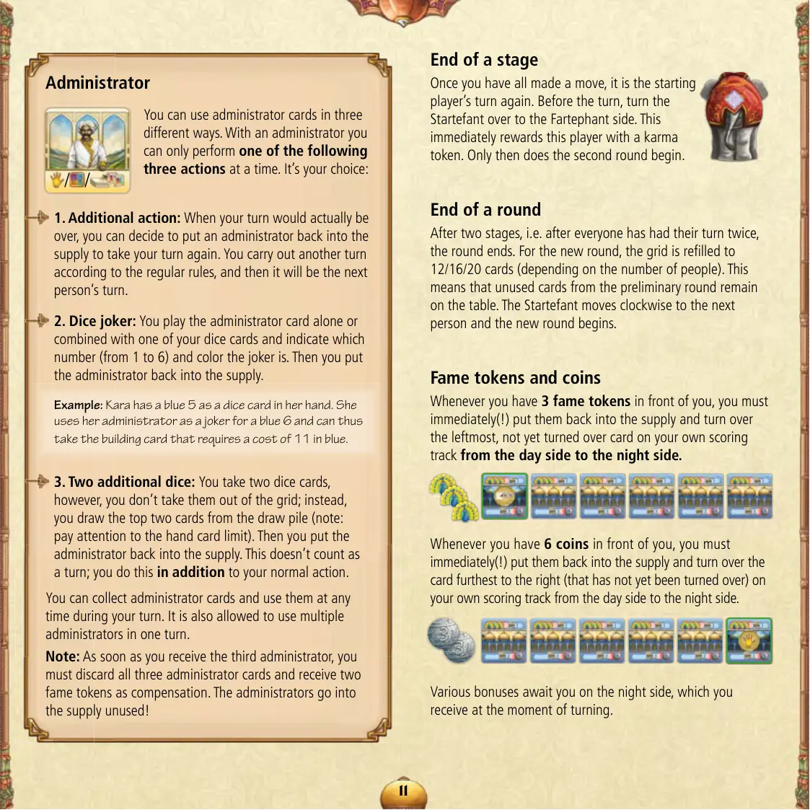
📝 第 11 页 AI 机翻对照（点击展开）
管理员
你可以用三种不同的方式使用管理员卡。使用管理员时，你一次只能执行以下三种行动之一。这是你的选择：
1. 额外行动：当你的回合实际上结束时，你可以决定将一个管理员放回供应区，从而再次进行你的回合。你根据常规规则执行另一个回合，然后轮到下一个人。
2. 骰子百搭：你可以单独使用管理员卡，或者与一张你的骰子卡组合使用，并指定百搭牌的数字（1到6）和颜色。然后将管理员放回供应区。
示例：卡拉手中有蓝色5作为骰子卡。她将她的管理员用作蓝色6的百搭牌，因此可以获取需要蓝色11费用的建筑卡。
3. 两个额外骰子：你获得两张骰子卡，但你不会从网格中取出它们；相反，你从牌库顶摸两张牌（注意：注意手牌上限）。然后将管理员放回供应区。这不计为一个回合；你在正常行动之外执行此操作。
你可以收集管理员卡，并在你的回合中的任何时候使用它们。也允许在一回合内使用多个管理员。
注意：一旦你获得第三个管理员，你必须立即丢弃所有三张管理员卡，并获得两个声望指示物作为补偿。管理员卡未使用就进入供应区！
阶段结束
一旦所有人都完成了行动，又轮到起始玩家。在回合开始前，将起始象翻转到远端象一侧。这会立即奖励该玩家一个业力指示物。只有在这之后，第二轮才会开始。
轮次结束
经过两个阶段，即每个人都进行了两次回合后，轮次结束。对于新一轮，网格将重新填充至12/16/20张牌（取决于人数）。这意味着预备轮未使用的牌仍然留在桌上。起始象顺时针移动到下一个人，新一轮开始。
声望指示物和金币
每当你在面前有3个声望指示物时，你必须立即(!)将它们放回供应区，并将你自己的计分轨道上最左侧尚未翻开的牌从白天面翻到夜晚面。
每当你在面前有6个金币时，你必须立即(!)将它们放回供应区，并将你自己的计分轨道上最右侧（尚未翻开）的牌从白天面翻到夜晚面。
夜晚面上有各种奖励，你在翻牌的瞬间获得这些奖励。
管理员
你可以用三种不同的方式使用管理员卡。使用管理员时，你一次只能执行以下
一次三个行动。这是你的选择：
1. 额外行动
当你的回合实际上结束时，你可以决定将一个管理员放回供应区，从而再次行动。你按照常规规则执行另一个回合，然后轮到下一个人。
2. 骰子百搭
你可以单独或与一张你的骰子卡牌组合使用管理员卡，并指出百搭骰子的数字（从1到6）和颜色。然后将管理员放回供应区。
示例：卡拉的手牌中有一张蓝色的5作为骰子卡。她将她的管理员用作蓝色6的百搭，因此可以打出需要蓝色成本11的建筑卡。
3. 两个额外骰子
你抽取两张骰子卡，然而，你不要把它们从网格中取出；相反，你从牌库顶抽取两张牌（注意：注意手牌上限）。然后将管理员放回供应区。这不算作一个回合；你可以在正常行动之外这样做。
你可以收集管理员卡并在你的回合期间的任何时间使用它们。也允许在一回合内使用多个管理员。
注意：
一旦你收到第三个管理员，你必须弃掉所有三张管理员卡并获得两个声望作为补偿。管理员进入供应区，未使用！
阶段结束
一旦所有人都行动完毕，又轮到起始玩家行动。在回合前，将起始象翻到象鼻侧。这立即奖励该玩家一个业力标记。然后第二轮才开始。
轮次结束
经过两个阶段，即每个人都行动两次后，轮次结束。对于新一轮，网格将重新填充到12/16/20张牌（取决于人数）。这意味着预备轮未使用的牌仍然留在桌上。起始象顺时针移动到下一个人，新一轮开始。
声望和金币
每当你的面前有3个声望标记时，你必须立即(!)将它们放回供应区，并将你自己的计分轨道上最左边尚未翻面的牌从日侧翻到夜侧。
每当你的面前有6个金币时，你必须立即(!)将它们放回供应区，并将你自己的计分轨道上最右边尚未翻面的牌从日侧翻到夜侧。
夜侧有各种奖励，你会在翻牌的瞬间获得它们。
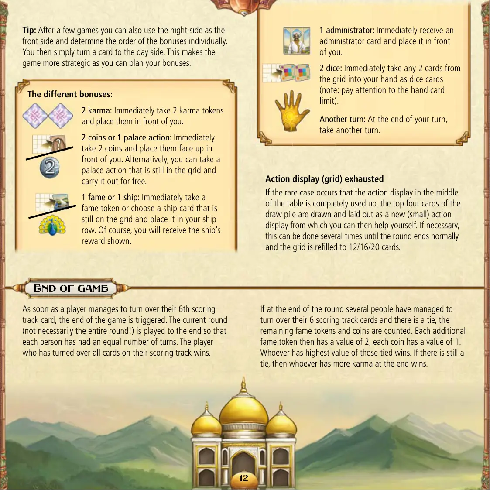
📝 第 12 页 AI 机翻对照（点击展开）
提示：玩过几局后，你也可以使用夜晚面作为正面，并单独决定奖励的顺序。
然后你只需将一张牌翻到白天面。这让游戏更具策略性，因为你可以规划你的奖励。
不同的奖励：
2业力：立即拿取2个业力指示物并将它们放在你面前。
2个硬币或1个宫殿行动：立即拿取2个硬币并将它们正面朝上放在你面前。或者，你可以拿取一个仍在网格中的宫殿行动并免费执行它。
1声望或1艘船：立即拿取一个声望指示物，或者选择一张仍在网格中的船卡并将其放置在你的船行中。当然，你会获得船上所示的奖励。
1个管理员：立即获得一张管理员卡并将其放在你面前。
2个骰子：立即从网格中任意拿取2张卡牌作为骰子卡牌放入你的手牌中（注意：注意手牌上限）。
额外回合：在你的回合结束时，再获得一个回合。
行动展示（网格）耗尽
如果出现罕见情况，即桌子中央的行动展示完全用完，则从牌库顶部抽取4张牌并展示为一个新的（小型）行动展示，然后你可以从中选择。如有必要，这可以多次进行，直到轮次正常结束，并将网格重新填充到12/16/20张牌。
一旦有玩家成功翻转他们的第6个计分轨道卡牌，游戏结束即被触发。当前轮次（不一定是整个轮次！）将进行到底，以确保每个人有相同数量的回合。成功翻转了计分轨道上所有卡牌的玩家获胜。
如果在轮次结束时，有多人成功翻转了他们的6张计分轨道卡牌并且出现平局，则计算剩余的声望指示物和硬币。每个额外的声望指示物价值为2，每个硬币价值为1。平局中价值最高的玩家获胜。如果仍然平局，则业力更多的玩家获胜。
游戏结束
提示：玩过几局后，你也可以使用夜晚面作为正面，并单独决定奖励的顺序。
然后你只需将一张牌翻到白天面。这让游戏更具策略性，因为你可以规划你的奖励。
奖励：
不同的奖励
业力：
2业力：立即拿取2个业力指示物并将它们放在你面前。
硬币或宫殿行动：
2硬币：立即拿取2个硬币并将它们正面朝上放在你面前。或者，你可以拿取一个仍在网格中的宫殿行动并免费执行它。
声望或船：
1声望：立即拿取一个声望指示物，或者选择一张仍在网格中的船卡并将其放置在你的船行中。当然，你会获得船上所示的奖励。
管理员
1 管理员：立即获得一张管理员卡牌并将其放置在你的面前。
2 骰子：立即从网格中任意拿取2张卡牌作为骰子卡牌到手牌（注意手牌上限）。
另一个回合：
在你的回合结束时，再进行一个回合。
行动网格（网格）耗尽
如果出现罕见情况，位于桌子中央的行动网格完全用完，则从牌库顶部抽取4张卡牌并展开作为新的（小型）行动网格，然后你可以从中选择。如有必要，此过程可以重复多次，直到本轮正常结束，网格被重新填充至12/16/20张卡牌。
一旦有玩家翻开了第6张计分轨道卡牌，游戏结束即被触发。当前回合（不一定是完整的回合！）将继续进行，直到每个人都获得相同数量的回合机会。翻开了计分轨道上所有卡牌的玩家获胜。
如果在回合结束时，有多位玩家翻开了他们的第6张计分轨道卡牌且出现平局，则计算剩余的声望指示物和硬币。每个额外的声望指示物价值为2分，每个硬币价值为1分。在平局者中，总价值最高者获胜。如果仍然平局，则结束时业力值更高的玩家获胜。